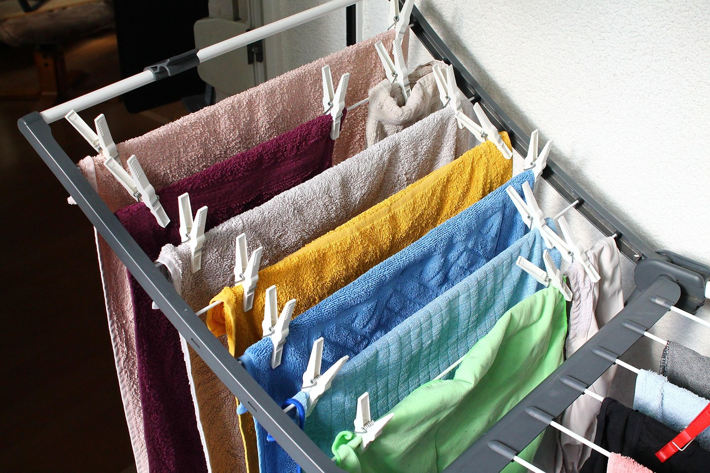
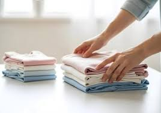
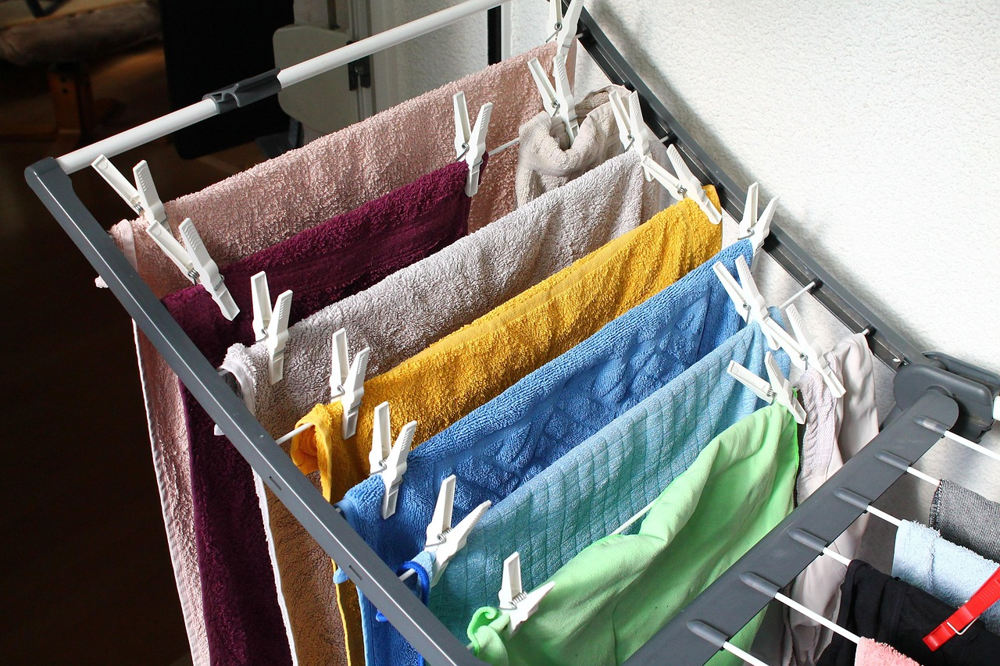
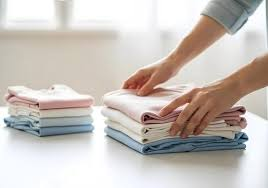

About Our Shop
Med'z' Laundry Shop started as a small idea in 2016 we noticed that many residents in the area were struggling to find a fast and reliable place to wash their clothes. Most people were busy with work and school, so doing laundry usually took too much of their time. Because of this, the owner decided to open a laundry shop that offers quick, clean, and affordable services for everyone.
At first, the shop only had a few washing machines and dryers, but through the support of customers, the business slowly grew. More equipment was added, and the services improved to make sure that every customer gets their clothes washed properly and on time. The goal of the shop is simple: to help people finish their laundry without stress and give them more time for the things that matter. Today, Med'z Laundry Shop continues to serve the community by providing quality laundry services with friendly and honest service. Even though the business is still growing, the commitment to cleanliness, convenience, and customer care remains the same.
 


